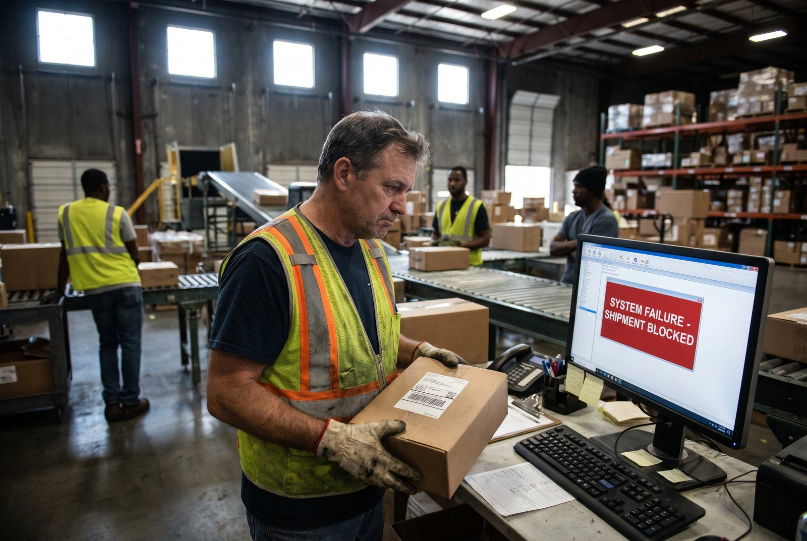

Kunden købte grøn. Nu mailer hun: kan jeg få blå i stedet?
Mens mailen sidder i indbakken, er ordren måske allerede plukket. Eller pakket. Eller sendt.
Manglende håndtering af den slags mails er en af de mest underestimerede kilder til fejlleverancer.
Hvad der typisk går galt
Dobbeltordre: Kunden mailer og opretter også en ny ordre i shoppen, fordi hun ikke får svar hurtigt nok. Du sender begge. Hun betaler to gange, eller du bytter på regningen.
For sent ind i systemet: Mailen læses to timer efter ordren er afsendt. Du måtte sige nej. Kunden er skuffet, selv om hun forstod det. Det efterlader en negativ oplevelse.
Forkert ændring: Kundeservice laver ændringen i WMS manuelt, får ordrenummeret forkert, ændrer en anden kundes ordre. Det opdages når begge klager.
Ingen registrering: Ændringen sker mundtligt mellem kundeservice og lager. Ingen skriver det ind. Ordren pakkes med det originale indhold. Kunden får den forkerte vare.
Hvad det koster når det går galt
Dobbeltordre sendt: 2x fragt (130 kr.) + returhåndtering (85 kr.) + kundeservice 20 min (133 kr.) = 478 kr. per fejl.
For sent opdaget: Retur + ny forsendelse + 30 min kundeservice = 380 kr. + potentielt mistet kunde (LTV 2.400 kr.).
150 ordrer/dag med 10 ændringsmails og 30% fejlrate = 60 fejl/måned à 400 kr. = 24.000 kr./måned i direkte tab.
👉 Bruger du SmartPack uden helpdesk-integration? Så mister du ordrer du kunne have reddet. Se hvordan SmartPack løser det
Hvad dit team skal gøre inden for 15 minutter
Når en kundemail ankommer med ændring til en ordre, er vinduet typisk 15-30 minutter før ordren er ude af hænderne. Her er det konkrete flow:
- Email modtages → identificer ordrenummer (se emnelinje eller ordrebekræftelse i trad)
- Tjek ordrens status i WMS → er den afventer pluk, under pluk, pakket eller afsendt?
- Afventer pluk: sæt ordren på pause i WMS → lav ændring → genaktiver
- Under pluk: kontakt plukker direkte, stop plukrunden, ret og genstart
- Pakket, ikke afsendt: tilbagehold pakken, åbn, ret, repak
- Afsendt: ændring er ikke mulig, informer kunden straks og tilbyd løsning
- Bekræft ændringen til kunden pr. retur-email med ny ordrespecifikation
Hele flowet bør kunne køres på under 5 minutter når systemerne kommunikerer. Når de ikke gør, tager det 15-30 minutter og fejlrisikoen er høj.
De kritiske fejlpunkter i flowet
Ingen ordrestatus synlig for kundeservice: Hvis kundeservice ikke kan se ordrens status i realtid, må de gætte eller ringe til lageret. Det tager tid og skaber fejl. Kundeservice er bagefter lageret i stedet for foran det.
Manuel ændring i WMS uden bekræftelse: Når ændringer laves manuelt og ikke bekræftes systemmæssigt, er der ingen audit trail. Ingen kan efterfølgende se hvad der skete, hvornår og hvem der gjorde det.
Ingen pause-funktion på ordrer: Hvis WMS ikke har en pause-funktion, kan du ikke stoppe en ordre midtvejs. Du må kassere plukrunden og starte forfra, eller bare håbe på at plukker ikke er nået til de varer der skal ændres.
SmartPack og Herodesk: kundeservice styrer ordren direkte
SmartPack integrerer med Herodesk. Det betyder at kundeservice kan se ordrens aktuelle status direkte i supportvinduet, når de håndterer en mail fra kunden.
De ser: ordrenummer, indhold, status (afventer/under pluk/pakket/sendt), og de kan sætte ordren på pause direkte fra Herodesk-widgetten uden at skulle åbne SmartPack i et separat vindue.
Det er forskellen på at være bagefter lageret og at være foran det. Andre helpdesks viser dig en ordre. Herodesk-integrationen lader dig styre den.
Hvornår giver det mening: 5+ ordreændringsmails om dagen (100+ ordrer/dag). Rentabelt inden for 3 måneder.
Hvornår giver det IKKE mening: Under 50 ordrer/dag og 1-2 ændringsmails om ugen. Manuel procedure er tilstrækkeligt.
Læs mere om Herodesk-integrationen og hvad den konkret gør i vores guide til integrationer og API i lagerstyring.
Hvad du kan gøre i dag uden integration
Hvis du ikke har WMS-helpdesk integration endnu, er her minimum-proceduren:
- Definer én person der håndterer ordre-ændringsmail i arbejdstiden
- Sæt en standard svartid på 15 minutter i arbejdstiden
- Lav en intern procedure: email → tjek status i WMS → handle → bekræft til kunde
- Log ALLE ændringer i WMS med kommentar (hvem, hvad, hvornår)
- Send altid bekræftelsesmail til kunde når ændring er håndteret
Det løser ikke det strukturelle problem, men det reducerer fejlraten markant i forhold til ingen procedure.